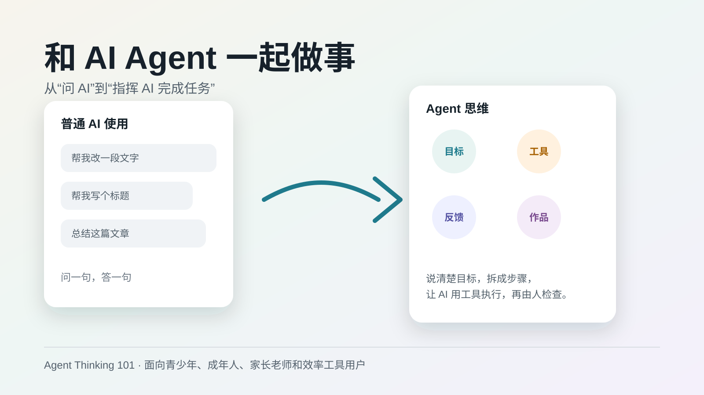
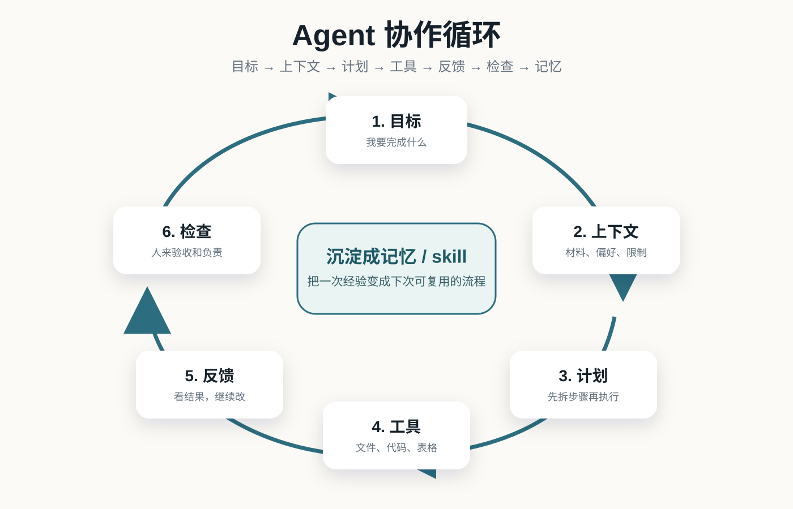

主课程章节
Agent Thinking 101
课程写到哪里、各章怎么安排，都在这里。
可以读主教程，也可以切到讲师手册、练习册和传播文案。Markdown 改完后刷新页面就会更新。

Prompt / Skill 模板
体验课版本
视觉信息图
Course Map
十章课程主线
这部分从主教程正文中自动抽取一级课程章节，适合快速看课程骨架。
Visual System
课程视觉资产
这些图可以用于课程介绍页、试讲投影、Notion 文档或小红书封面草稿。
